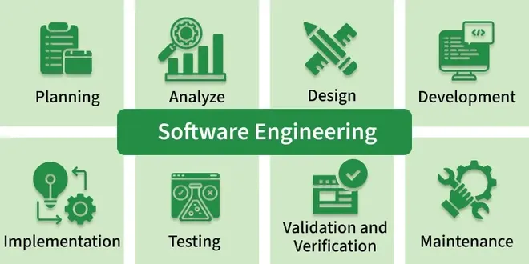

1.1 Introduction to Software Engineering
Software Engineering (SE) is the systematic, disciplined, and quantifiable application of engineering principles to the design, development, testing, and maintenance of software. It treats software development as an engineering activity rather than informal programming, so that the final product is high-quality, reliable, and maintainable — especially when the system is large, long-lived, or used by many people.
To understand the term, split it into two parts. Software is a program or set of programs that contain instructions to perform a task on a computer. Engineering is the process of designing and building something that serves a purpose efficiently, safely, and within acceptable cost. Software Engineering therefore means building software in a planned, repeatable, and measurable way — not by trial-and-error coding alone.
Software Engineering vs programming
Programming focuses on writing code that solves a problem. Software Engineering covers the entire lifecycle: understanding requirements, designing architecture, writing code, testing, deploying, and maintaining the product over time. A small personal script may need only programming; a hospital system, banking app, or university portal needs Software Engineering because many people depend on it, requirements change, and mistakes can be costly.

Goals of Software Engineering
Software Engineering aims to produce software that satisfies users and organisations. The main goals are:
- Correctness: The software must do what the user and requirements specify, without unexpected behaviour.
- Reliability: The software should work consistently under normal use and recover gracefully from errors.
- Efficiency: The software should use reasonable time, memory, and other resources.
- Maintainability: The software should be easy to understand, modify, and extend when requirements change.
- On-time delivery: The project should be completed within the planned schedule.
- Within budget: Development and maintenance costs should stay within acceptable limits.
Key principles of Software Engineering
These principles guide how engineers structure and build software systems:
- Modularity: Large software is divided into smaller, independent modules so that each part can be developed, tested, and maintained separately.
- Abstraction: Only essential details are shown to the user or other components, while unnecessary internal complexity is hidden.
- Encapsulation: Data and the functions that operate on it are grouped together, and direct outside access is restricted to protect integrity.
- Testing: Software is checked at different levels to verify that it behaves correctly and meets stated requirements before release.
- Maintenance: Software is updated after delivery to fix defects, add features, improve performance, and address security issues.
- Design patterns: Engineers reuse proven solutions to common design problems instead of inventing a new approach every time.
- Agile methodologies: Development is done in small iterations with regular feedback so the product can adapt to changing needs.
- CI/CD (Continuous Integration / Continuous Deployment): Code changes are merged and tested frequently, and updates are released in a controlled, automated way.
What software engineers do
Software engineers work in teams to deliver solutions that meet customer or business needs. Their work spans the full lifecycle, not just writing code. Core responsibilities include the following:
- Requirement analysis: Software engineers meet with clients, users, and managers to understand what the system must do and document those needs clearly.
- Design and development: They create system designs and write well-structured, readable code that can be maintained by others in the team.
- Testing and debugging: They run unit tests, integration tests, and system tests to find defects, then trace and fix the root cause of each bug.
- Code review: They read each other's code to catch mistakes early, enforce standards, and share knowledge across the team.
- Maintenance: After release, they update existing systems to fix bugs, add new features, and keep the software compatible with changing environments.
- Documentation: They prepare code comments, API documentation, and design documents so that future developers can understand and work on the system.
Why a systematic approach matters
Without Software Engineering, teams often follow an ad-hoc build-and-fix approach: write code, run it, patch errors, and repeat. This may work for tiny programs but fails on large projects because complexity grows faster than the team can control. A systematic approach uses defined processes, standards, reviews, and testing so that quality, cost, and schedule remain manageable. This need became especially clear during the Software Crisis of the 1960s–70s, when many projects ran over budget and delivered unreliable software.
Q: Define Software Engineering and explain why a systematic approach is needed for large projects.
Model answer points:
- Software Engineering is the systematic application of engineering principles to design, develop, test, and maintain software.
- Its goals include quality, reliability, maintainability, and delivering the product on time and within budget.
- Programming alone is not enough for large systems because requirements, teams, and complexity grow beyond informal control.
- Without SE, ad-hoc coding leads to cost overruns, delays, and poor quality (see §1.6 Software Crisis).
- SE uses processes, standards, testing, documentation, and project management to control complexity.